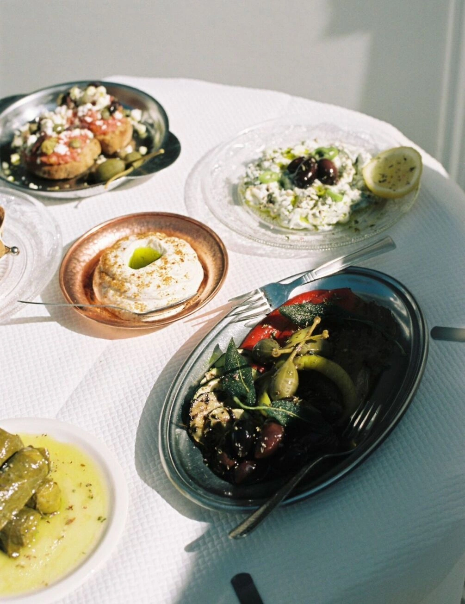

Welcome to OPA!
Traditional Greek food with a modern twist.


Located in Trondheim city centre.
Munkegata 1, 7011 Trondheim RESERVE A TABLE MENU EVENTS CONTACT US“Playful, inventive and fresh!”


Traditional Greek food with a modern twist.

“Playful, inventive and fresh!”